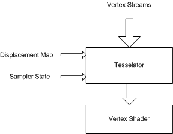

description: Displacement maps are similar to texture maps but are accessed by the vertex engine.
ms.assetid: d6f16ff2-5a66-48a3-82c4-523faaafa6ae
title: Displacement Mapping (Direct3D 9)
ms.topic: article
ms.date: 05/31/2018
Displacement Mapping (Direct3D 9)
Displacement maps are similar to texture maps but are accessed by the vertex engine.
Block Diagram
An additional sampler stage is present in the early part of the vertex pipe, as shown in the following diagram, which can sample a displacement map to provide vertex displacement data.

The displacement map sampler state can be set by the SetSamplerState using stage number 256, which is a new stage number. The displacement map texture is set by SetTexture.
The map can be presampled or not, which means that it can be ordered in a way that enables the lookup of the displacement values without filtering.
- Displacement maps are analogous to texture maps but are accessed by the vertex engine.
- An additional sampler stage is present in the early part of the vertex pipe that can sample a displacement map. This stage is accessed by the usual SetSamplerState API but the stage number is D3DDMAPSAMPLER = 256.
- The displacement map sampler state can be set by the SetSamplerState(D3DDMAPSAMPLER, ...) API.
- The displacement map texture is set by the SetTexture(D3DDMAPSAMPLER, texture) API.
- The map can be pre-sampled or not. This means that it can be ordered in a particular way that enables the lookup of the displacement values without filtering.
- The changes in the declaration structure allow the specification of the texture coordinate used to look up the texture map. For example, Stream0, Offset, FLOAT2, LOOKUP, Displacement_value. This tells the tessellator to use the 2D float vector in stream0 at a certain offset as a texture coordinate to look up the displacement map and associate the Displacement_value usage semantic to it. The vertex shader declaration would contain a line similar to {dcl_texture0, v0} indicating that the texture0 semantic is to be associated with the v0 input register. The displacement value looked up is copied into input register v0.
- There is a special type of displacement mapping, when the texture map is pre-sampled. Sequential index of generated vertices is used as a texture coordinate to a texture map. For example, 0,0,(D3DDECLTYPE)0,D3DDECLMETHOD_LOOKUPPRESAMPLED, Usage, UsageIndex.
- The output of the lookup is 4 floats.
- Displacement mapping is supported only with N-patches.
- Drivers need to ignore D3DDMAPSAMPLER in SetTextureStageState if they do not handle displacement maps.
- D3DTEXF_ANISOTROPIC filter mode is not supported.
- When D3DSAMP_MIPFILTER in the displacement map sampler is not D3DTEXF_NONE, the level of detail is computed as follows (Note that the adaptive tessellation state is used even if the D3DRS_ENABLEADAPTIVETESSELLATION is FALSE): Tmax = render state D3DRS_MAXTESSELLATIONLEVEL
- Compute tessellation level Te for a vertex Vi: (Xi, Yi, Zi) the same way as described in the "Adaptive tessellation" section. Level of detail L = log2(Tmax) - log2 (Te).
- Texture filtering and sampling operations follow the same rules as the pixel pipeline (level of detail (LOD) bias is applied, etc.).
- Not all formats can be used as displacement maps but only those that support the D3DUSAGE_DMAP. The application can query that with the CheckDeviceFormat CheckDeviceFormat.
- D3DUSAGE_DMAP must be specified in CreateTexture to notify the driver that this texture is to be used as a displacement map.
- D3DUSAGE_DMAP can only be used with textures. It cannot be used with cube maps or volumes.
- Textures and render targets created with D3DUSAGE_DMAP can be set at regular sampler stages and as render targets.
- The render states to set the wrap mode for the texture coordinates are ignored in displacement mapping. In general, there are no wrap modes for the tessellator engine.
- A displacement map sampler has behavior identical to that of the pixel texture samplers. If a texture with less than four channels (like R32f) is looked up, the looked-up values go to the appropriate channels of the destination register (the vertex shader input register tagged with the _sample semantic), while the other channels default to (1, 1, 1). When looked up, D3DFMT_L8 gets broadcast into the R, G, B channels and A defaults to 1. The reference rasterizer has the full implementation details.
Pre-Sampled Displacement Mapping
- New sampler state is introduced: D3DSAMP_DMAPOFFSET (DWORD) - offset (in vertices) in a pre-sampled displacement map.
- New declaration method is introduced: D3DDECLMETHOD_LOOKUPPRESAMPLED.
- Adaptive tessellation should be disabled.
- Texture filter settings are ignored. Point sampling is done. The mip texture filter is assumed to be D3DTEXF_NONE. All other texture filter modes are assumed to be D3DTEXF_POINT.
- Texture coordinates are computed as: U = (Index % TextureWidthInPixeles) / (float)(TextureWidthInPixeles) V = (Index / TextureWidthInPixeles) / (float)(TextureHeightInPixeles) where Index is a sequential index of generated vertices plus TSS[D3DSAMP_DMAPOFFSET]. The sequential index is set to zero at the start of each primitive and is increased after a vertex is generated.
These are the API changes that support displacement mapping.
- A single channel format added, D3DFMT_L16.
- A new usage flag, D3DUSAGE_DMAP.
- A special texture stage, used to set a displacement map texture, D3DDMAPSAMPLER.
- New hardware caps have been added, D3DDEVCAPS2_DMAPNPATCH and D3DDEVCAPS2_PRESAMPLEDDMAPNPATCH. See D3DDEVCAPS2.
Related topics
Vertex Pipeline
Â
Â